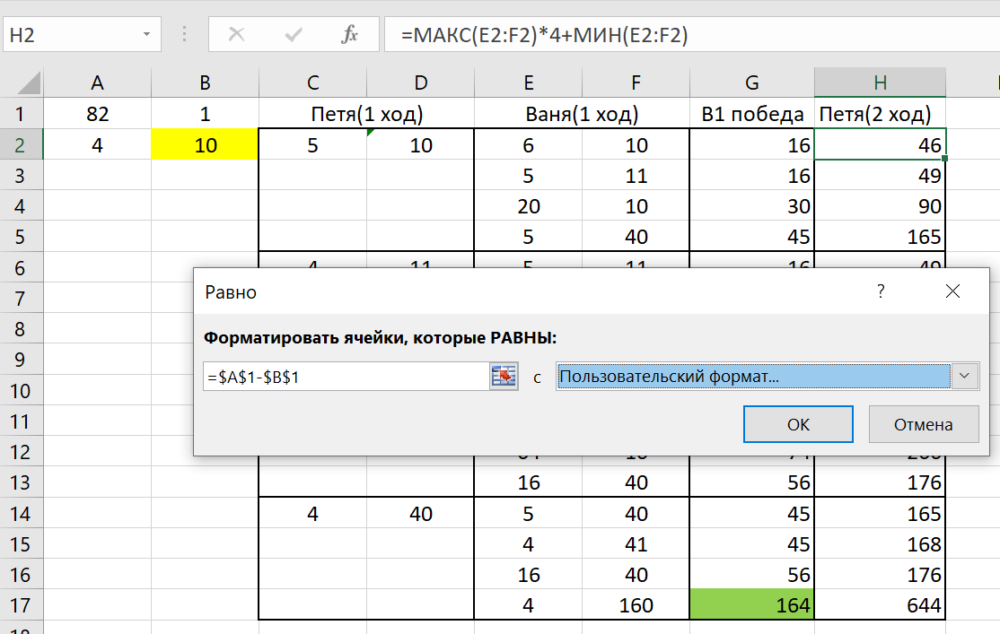

Задание №1
Два игрока, Петя и Ваня, играют в следующую игру. Перед игроками лежат две кучи камней. Игроки ходят по очереди, первый ход делает Петя. За один ход игрок может добавить в одну из куч один камень или увеличить количество камней в куче в четыре раза. Игра завершается в тот момент, когда суммарное количество камней в кучах становится не менее 82. Победителем считается игрок, сделавший последний ход, то есть первым получивший позицию, в которой в кучах будет 82 или больше камней. В начальный момент в первой куче было 4 камня, во второй куче — S камней, 1 ≤ S ≤ 77. Найдите минимальное значение S, при котором одновременно выполняются два условия:
— у Вани есть выигрышная стратегия, позволяющая ему выиграть первым или вторым ходом при любой игре Пети;
— у Вани нет стратегии, которая позволит ему гарантированно выиграть первым ходом. |
Решение:
- Открываем Excel и вносим необходимые нам данные в следующем виде: А1 - минимальное суммарное значение камней для победы, А2 - кол-во камней в первой куче, B2 - кол-во камней во второй куче(S), B1 - минимальный ход (в данной задаче это +1).
- Далее нам нужно заполнить "каркас" таблицы следующим образом. Необходимо объединить ячейки "Петя(1 ход)" и "Ваня(1 ход)".
- Теперь нужно заполнить все варианты развития событий, включая во внимание все возможные ходы:
- +1
- *4
Делать это нужно при помощи команд. Для наглядности лучше заменить S на любое число, например 10. В своем первом ходу Петя может увеличить первую кучу на 1, вторая же куча останется нетронутой. Заполнять ячейки лучше всего командами
На каждый ход Пети существует 4 различных хода Вани, их нам нужно заполнить командами. В первом варианте он может увеличить первую кучу на 1, во втором - увеличить вторую кучу на 1, в втретьем - увеличить первую кучу в 4 раза, в четвертом - увеличить вторую кучу в 4 раза.

- Далее необходимо заполнить оставшиеся 3 варианта первого хода Пети также через команды.
- В ячейку "В1 победа" нам нужно написать следующую команду и растянуть на всю таблицу
Эта ячейка суммирует две кучки, которые остались после хода Вани, чтобы проверить не победил ли он своим первым ходом. Его победные суммы камней, которые должны быть больше или равно 82, нужно выделить. Про автоматическое выделение есть информация в разборе 19 и 20 заданий.
- После этого в ячейке "Петя(2 ход)" нам нужно получить максимальное число. Для этого нужно максимальное число камней в какой-то куче умножить на 4 и сложить с минимальной кучей. Для этого используем данную команду и растягиваем команду на всю таблицу

Далее нам нужно будет выделить только те значения, которые будут равны разности минимального количества камней для победы и минимального хода(+1). Делать это нужно таким же образом через условное форматирование. Желательно командами.

- Теперь нам нужно менять значение S и следить за тем, чтобы в каждой строке таблицы была цветная ячейка, но цветов должно быть два, то есть все зеленые нам не подходят. У меня минимальным таким числом получилось число 18, записываем ответ.
Ответ:18
Задание №2
Два игрока, Петя и Ваня, играют в следующую игру. Перед игроками лежит куча камней. Игроки ходят по очереди, первый ход делает Петя. За один ход игрок может добавить в кучу один или три камня или увеличить количество камней в куче в два раза. Игра завершается в тот момент, когда количество камней в куче становится не менее 42. Победителем считается игрок, сделавший последний ход, т. е. первым получивший кучу, в которой будет 42 или больше камней. В начальный момент в куче было S камней; 1 меньше или равно S меньше или равно 41. Найдите минимальное значение S, при котором одновременно выполняются два условия:
— у Вани есть выигрышная стратегия, позволяющая ему выиграть первым или вторым ходом при любой игре Пети;
— у Вани нет стратегии, которая позволит ему гарантированно выиграть первым ходом. |
Решение:
- В этом варианте задания мы уже имеем дело не с двумя, а с одной кучей, но алгоритм остается тем же. Заполняем таблицу таким образом: А1 - минимальное суммарное значение камней для победы, А2 - кол-во камней в куче S (для наглядности можно взять любое число, например 10), B1 - наибольший ход сложения(в нашем случае это +3).
- Далее нужно заполнить каркас таблицы и прописать все варианты ходов, делать это нужно при помощи команд
- В графу "В1 победа" переносим через команды значения Вани за 1 ход, также нужно будет поставить индикатор через условное форматирование, который будет свидетельствовать о его победе. Делать его нужно точно так же, как и в предыдущих заданиях.
- Теперь заполняем следующий столбец таблицы. Под ячейкой "Петя(2 ход)" нужно прописать эту команду и растянуть на весь столбец.
Теперь нам нужно сделать индикатор через условное форматирование, который будет выделять те значения, которые равны разности минимального кол-ва камней для победы и наибольшего хода сложения (+3)
- Теперь нам нужно создать еще 2 такие таблицы путем копирования первой, чтобы охватить весь диапозон ходов сложения. Сделать нужно так, чтобы все эти таблицы зависели от ячейки А2 - кол-во камней в куче S
Отличаться они будут параметрами условного форматирования, необходимо проверить все числа в диапозоне от двух ходов сложения, то есть числа 1 и 2 (3 мы уже проверили).
Во второй таблице:
В третьей:
- Теперь нам нужно менять значение S и следить за тем, чтобы в каждой строке таблицы была цветная ячейка, но цветов должно быть два, то есть все зеленые нам не подходят. У меня минимальным таким числом получилось число 16, то есть нужно, чтобы только у одной таблицы все условия сошлись. Записываем ответ.
Ответ:16
Назад |